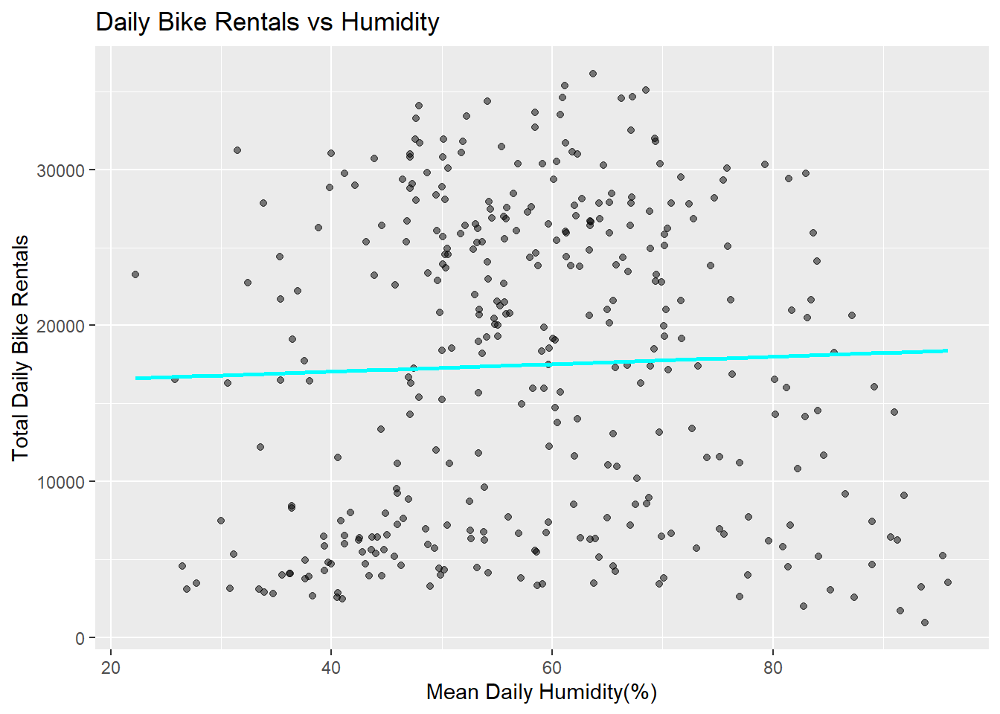
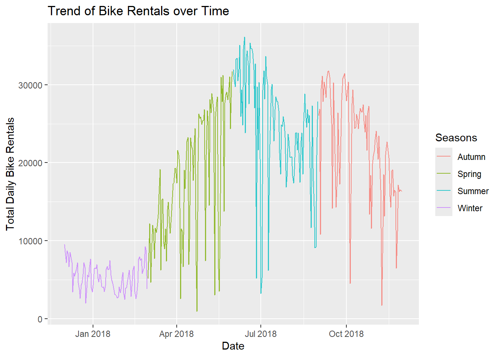
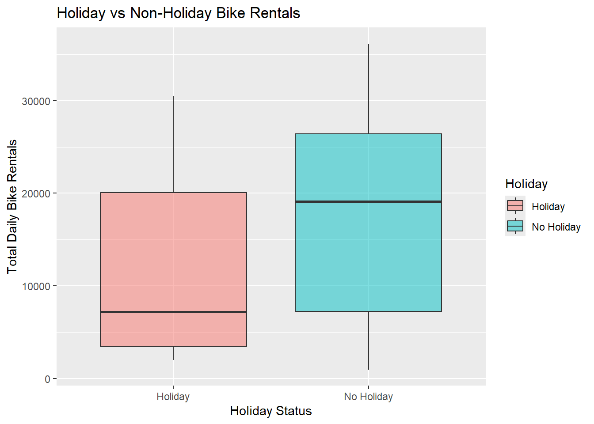
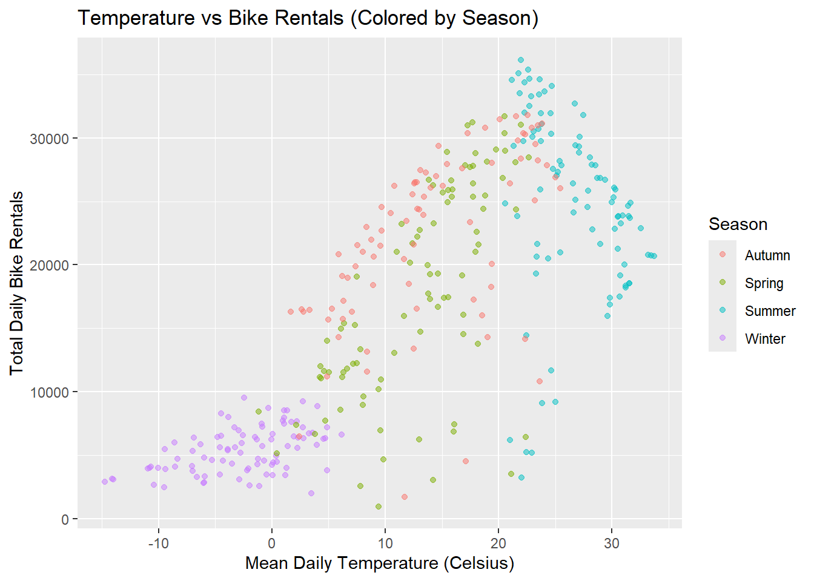

Rows: 8760 Columns: 14
── Column specification ────────────────────────────────────────────────────────
Delimiter: ","
chr (4): Date, Seasons, Holiday, Functioning Day
dbl (10): Rented Bike Count, Hour, Temperature(°C), Humidity(%), Wind speed ...
ℹ Use `spec()` to retrieve the full column specification for this data.
ℹ Specify the column types or set `show_col_types = FALSE` to quiet this message.
EDA
Checking for Missing Data
To begin the Exploratory Data Analysis, I first checked for any missing columns. Missing values can potentially introduce bias (or errors) in any modeling done down the road.
colSums(is.na(data))
Date Rented Bike Count Hour
0 0 0
Temperature(°C) Humidity(%) Wind speed (m/s)
0 0 0
Visibility (10m) Dew point temperature(°C) Solar Radiation (MJ/m2)
0 0 0
Rainfall(mm) Snowfall (cm) Seasons
0 0 0
Holiday Functioning Day
0 0
The results show that there is no missing data in the current data set, meaning the data set is complete.
Checking Columns Types and Values within Columns
The next step is to check if each variable is stored under the correct data type and that the values of each variable make sense given the variable definitions.Categorical variables need to have their unique values checked as well.
Date Rented Bike Count Hour Temperature(°C)
Length:8760 Min. : 0.0 Min. : 0.00 Min. :-17.80
Class :character 1st Qu.: 191.0 1st Qu.: 5.75 1st Qu.: 3.50
Mode :character Median : 504.5 Median :11.50 Median : 13.70
Mean : 704.6 Mean :11.50 Mean : 12.88
3rd Qu.:1065.2 3rd Qu.:17.25 3rd Qu.: 22.50
Max. :3556.0 Max. :23.00 Max. : 39.40
Humidity(%) Wind speed (m/s) Visibility (10m) Dew point temperature(°C)
Min. : 0.00 Min. :0.000 Min. : 27 Min. :-30.600
1st Qu.:42.00 1st Qu.:0.900 1st Qu.: 940 1st Qu.: -4.700
Median :57.00 Median :1.500 Median :1698 Median : 5.100
Mean :58.23 Mean :1.725 Mean :1437 Mean : 4.074
3rd Qu.:74.00 3rd Qu.:2.300 3rd Qu.:2000 3rd Qu.: 14.800
Max. :98.00 Max. :7.400 Max. :2000 Max. : 27.200
Solar Radiation (MJ/m2) Rainfall(mm) Snowfall (cm) Seasons
Min. :0.0000 Min. : 0.0000 Min. :0.00000 Length:8760
1st Qu.:0.0000 1st Qu.: 0.0000 1st Qu.:0.00000 Class :character
Median :0.0100 Median : 0.0000 Median :0.00000 Mode :character
Mean :0.5691 Mean : 0.1487 Mean :0.07507
3rd Qu.:0.9300 3rd Qu.: 0.0000 3rd Qu.:0.00000
Max. :3.5200 Max. :35.0000 Max. :8.80000
Holiday Functioning Day
Length:8760 Length:8760
Class :character Class :character
Mode :character Mode :character
The data set appears to be clean. Categorical variables have expected values; for example, Seasons has values such as “Winter”, Holiday has “No Holiday”, and Functioning Day has “Yes”. The numeric variables have expected ranges such as Hours not exceeding 24 and Humidity(%) not exceeding 100.
Converting Date Column
The date column is currently read simply as text so it needs to be converted to an actual Date object.
data$Date <-dmy(data$Date)
This change will allow for time-based grouping and plotting later.
Convert Character Variables to Factors
Categorical variables are being changed from character to factor variables.
data <- data |>mutate(Seasons =as.factor(Seasons),Holiday =as.factor(Holiday),`Functioning Day`=as.factor(`Functioning Day`) )
They have been changed to factor variables for better summaries and modeling later on.
Rename Columns
The variables names are being converted to PascalCase making them easier to use.
data <- data |>clean_names(case ="big_camel")glimpse(data)
#RentedBikeCount Mean by Holidaydata |>group_by(Holiday) |>summarise(MeanBikes =mean(RentedBikeCount))
# A tibble: 2 × 2
Holiday MeanBikes
<fct> <dbl>
1 Holiday 500.
2 No Holiday 715.
#RentedBikeCount Mean by Functioning Daydata |>group_by(FunctioningDay) |>summarise(MeanBikes =mean(RentedBikeCount))
# A tibble: 2 × 2
FunctioningDay MeanBikes
<fct> <dbl>
1 No 0
2 Yes 729.
#Subsetting Data to Only Include Functioning Day = Yesdata <- data |>filter(FunctioningDay =="Yes")
The mean rented bike count across FunctioningDay showed that when that variable takes on a value of “no”, the operation was in fact closed. Therefore, I subsetted the data to only include days in which the company was operational (FunctioningDay = “Yes”).
Summarize the Data to have only One Observation per Day
The current data set records values on an hourly basis, so the data is going to be summarized in a way that each observation represents the counts and averages for the day. This will allows us to work with the data on a day by day basis, not hour by hour basis.
The new data set that we are going to work with contains 353 daily observations (as opposed to 8465 before) representing the 353 days out the year that the rental shop was open. It now contains summarized daily weather information and total daily rentals.
Exploring Relationships / Coorelations (using New Data Set)
I am going to check the daily summaries using the new data set. I am also going to check the correlations between numeric variables.
#Basic Summariessummary(DailyData)
Date Seasons Holiday TotalBikeCount
Min. :2017-12-01 Autumn:81 Holiday : 17 Min. : 977
1st Qu.:2018-02-27 Spring:90 No Holiday:336 1st Qu.: 6967
Median :2018-05-28 Summer:92 Median :18563
Mean :2018-05-28 Winter:90 Mean :17485
3rd Qu.:2018-08-24 3rd Qu.:26285
Max. :2018-11-30 Max. :36149
TotalRainfallMm TotalSnowfallCm MeanTempC MeanHumidityPercent
Min. : 0.000 Min. : 0.000 Min. :-14.738 Min. :22.25
1st Qu.: 0.000 1st Qu.: 0.000 1st Qu.: 3.304 1st Qu.:47.58
Median : 0.000 Median : 0.000 Median : 13.738 Median :57.17
Mean : 3.576 Mean : 1.863 Mean : 12.776 Mean :58.17
3rd Qu.: 0.500 3rd Qu.: 0.000 3rd Qu.: 22.592 3rd Qu.:67.71
Max. :95.500 Max. :78.700 Max. : 33.742 Max. :95.88
MeanWindSpeedMs MeanVisibility10M MeanDewPointC MeanSolarMjm2
Min. :0.6625 Min. : 214.3 Min. :-27.750 Min. :0.02917
1st Qu.:1.3042 1st Qu.:1087.0 1st Qu.: -5.188 1st Qu.:0.28333
Median :1.6583 Median :1557.8 Median : 4.612 Median :0.56500
Mean :1.7261 Mean :1434.0 Mean : 3.954 Mean :0.56773
3rd Qu.:1.9542 3rd Qu.:1874.3 3rd Qu.: 14.921 3rd Qu.:0.82000
Max. :4.0000 Max. :2000.0 Max. : 25.038 Max. :1.21667
#Correlation (Numeric Variables)NumericVars <-select(DailyData, where(is.numeric))round(cor(NumericVars, use ="pairwise.complete.obs"), 2)
Now I am going to exploring relationships using plots. Specifically, Humidity vs Bike Rental Total, Trend over Over Time, Holiday Rentals vs Non-Holiday Rentals, & Temperature vs Rentals (Colored by Season)
# Humidity vs Bike Rental Total ggplot(DailyData, aes(x = MeanHumidityPercent, y = TotalBikeCount)) +geom_point(alpha =0.5) +geom_smooth(method ="lm", se =FALSE, color ="cyan") +labs(title ="Daily Bike Rentals vs Humidity",x ="Mean Daily Humidity(%)",y ="Total Daily Bike Rentals")
`geom_smooth()` using formula = 'y ~ x'

This plot shows that there is not a strong relationship between humidity and daily bike rentals. The correlation is 0.04 along with the scatterplot leads up to conclude that humidity alone is not a driving force of consumer bike rental behavior.
# Trend of Bike Rentals over Timeggplot(DailyData, aes(x = Date, y = TotalBikeCount, color = Seasons)) +geom_line(alpha =0.8) +labs(title ="Trend of Bike Rentals over Time",x ="Date",y ="Total Daily Bike Rentals")

In the figure above, the daily trend over time shows rentals are low in the wintertime and then steadily increases through the spring into the summer. There is a small decline in late summer/early fall with a brief rebound in September/October before tapering off as winter approaches. Although there are clear fluctuations present, the overall trend is low bike rentals over the cold periods of the year and peak bike rentals occuring in the warm periods of the year.
#Holiday vs Non-Holiday Bike Rentalsggplot(DailyData, aes(x = Holiday, y = TotalBikeCount, fill = Holiday)) +geom_boxplot(aplha =0.5) +labs(title ="Holiday vs Non-Holiday Bike Rentals",x ="Holiday Status",y ="Total Daily Bike Rentals")
Warning in geom_boxplot(aplha = 0.5): Ignoring unknown parameters: `aplha`

From the boxplot above, we can see that there are noticeably less bike rentals on holidays than on days that are not considered holidays.
#Temperature vs Rentals (Colored by Season)ggplot(DailyData, aes(x = MeanTempC, y = TotalBikeCount, color = Seasons)) +geom_point(alpha =0.5) +labs(title ="Temperature vs Bike Rentals (Colored by Season)",x ="Mean Daily Temperature (Celsius)",y ="Total Daily Bike Rentals",color ="Season")

The figure above displays a positive relationship between temperature and rentals. The higher the temperature, the more bike rentals there are. Summer has the most rentals but it appears as it gets extremely hot, the rentals decline. Overall, warmer months promote more people to rent bikes and colder months have lower demand for bike rentals.
Split the Data
#For reproducibilityset.seed(1234)#Split Data 75/25 (Stratified by Seasons)DailyDataSplit <-initial_split(DailyData, prop =0.75, strata = Seasons)TrainingData <-training(DailyDataSplit)TestData <-testing(DailyDataSplit)#Checking Overall Rationrow(TrainingData) /nrow(DailyData)
[1] 0.7450425
nrow(TestData) /nrow(DailyData)
[1] 0.2549575
#10-fold CV splitCvFolds <-vfold_cv(TrainingData, v =10, strata = Seasons)#Checking the split balance for Training Data and Testing Dataprop.table(table(TrainingData$Seasons))
Autumn Spring Summer Winter
0.2281369 0.2547529 0.2623574 0.2547529
prop.table(table(TestData$Seasons))
Autumn Spring Summer Winter
0.2333333 0.2555556 0.2555556 0.2555556
#Creating Weekday/Weekend Factor Variable // Normalizing Numeric Variables // Creating Dummy VariablesRecipe1 <-recipe(TotalBikeCount ~ ., data = TrainingData) |>#Extracting day of the weekstep_date(Date, features ="dow", label =TRUE) |>#Creating the weekday/weekend variablestep_mutate(DayType =factor(if_else(Date_dow %in%c("Sat", "Sun"), "Weekend", "Weekday")) ) |>#Removing Date and intermediate variablestep_rm(Date, Date_dow) |>#Removing columns that have no variation (these columns contribute nothing to the upcoming models)step_zv(all_predictors()) |>#Normalizing the predictors (mean = 0, standard deviation = 1)step_normalize(all_numeric_predictors()) |>#Create dummy variables for Seasons, Holiday, and DayTypestep_dummy(all_of(c("Seasons", "Holiday", "DayType")))#Prepping and BakingRecipe1_Prep <-prep(Recipe1)TrainingProcessed <-bake(Recipe1_Prep, new_data = TrainingData)TestingProcessed <-bake(Recipe1_Prep, new_data = TestData)#Quick Visual Check of Variables (No Date column // Dummy variables created // Numeric variables standardized)glimpse(TrainingProcessed)
#Ensuring reproducibilityset.seed(1234)#Defining what model to fit and what engine to useModelSpec <-linear_reg() |>set_engine("lm")#Recipe 1 workflow and cross-validationWf1 <-workflow() |>add_model(ModelSpec) |>add_recipe(Recipe1)Results1 <-fit_resamples( Wf1, resamples = CvFolds, metrics =metric_set(rmse, rsq), control =control_resamples(save_pred =TRUE))
Warning: Using `all_of()` outside of a selecting function was deprecated in tidyselect
1.2.0.
ℹ See details at
<https://tidyselect.r-lib.org/reference/faq-selection-context.html>
#Recipe 2 workflow and cross-validationWf2 <-workflow() |>add_model(ModelSpec) |>add_recipe(Recipe2)Results2 <-fit_resamples( Wf2, resamples = CvFolds, metrics =metric_set(rmse, rsq), control =control_resamples(save_pred =TRUE) )#Recipe 3 workflow and cross-validationWf3 <-workflow() |>add_model(ModelSpec) |>add_recipe(Recipe3)Results3 <-fit_resamples( Wf3, resamples = CvFolds, metrics =metric_set(rmse, rsq), control =control_resamples(save_pred =TRUE) )#Compare the 3 modelsbind_rows(Results1 =collect_metrics(Results1),Results2 =collect_metrics(Results2),Results3 =collect_metrics(Results3),.id ="Recipe")
# A tibble: 6 × 7
Recipe .metric .estimator mean n std_err .config
<chr> <chr> <chr> <dbl> <int> <dbl> <chr>
1 Results1 rmse standard 3895. 10 147. pre0_mod0_post0
2 Results1 rsq standard 0.850 10 0.0142 pre0_mod0_post0
3 Results2 rmse standard 2830. 10 189. pre0_mod0_post0
4 Results2 rsq standard 0.922 10 0.0132 pre0_mod0_post0
5 Results3 rmse standard 2768. 10 180. pre0_mod0_post0
6 Results3 rsq standard 0.925 10 0.0124 pre0_mod0_post0
The 10-fold cross-validation shows that Recipe 3 was the best model to choose as the final given it had the lowest RMSE (2768) and highest R-Squared (0.925). The recipe that contains both the interactions as well as the squared terms had the best predictive accuracy of the three recipes. When the interactions were included in the model, there wasa big increase in predictive accuracy (Recipe 1: RMSE = 3895 / RSq = 0.850 vs Recipe 2: RMSE = 0.922 / RSq = 0.922). Although it appears insignificant, the accuracy of the model further improved when the quadratic terms were introduced. [Recipe 3 > Recipe 2 > Recipe 1 (in terms of predictive accuracy)]